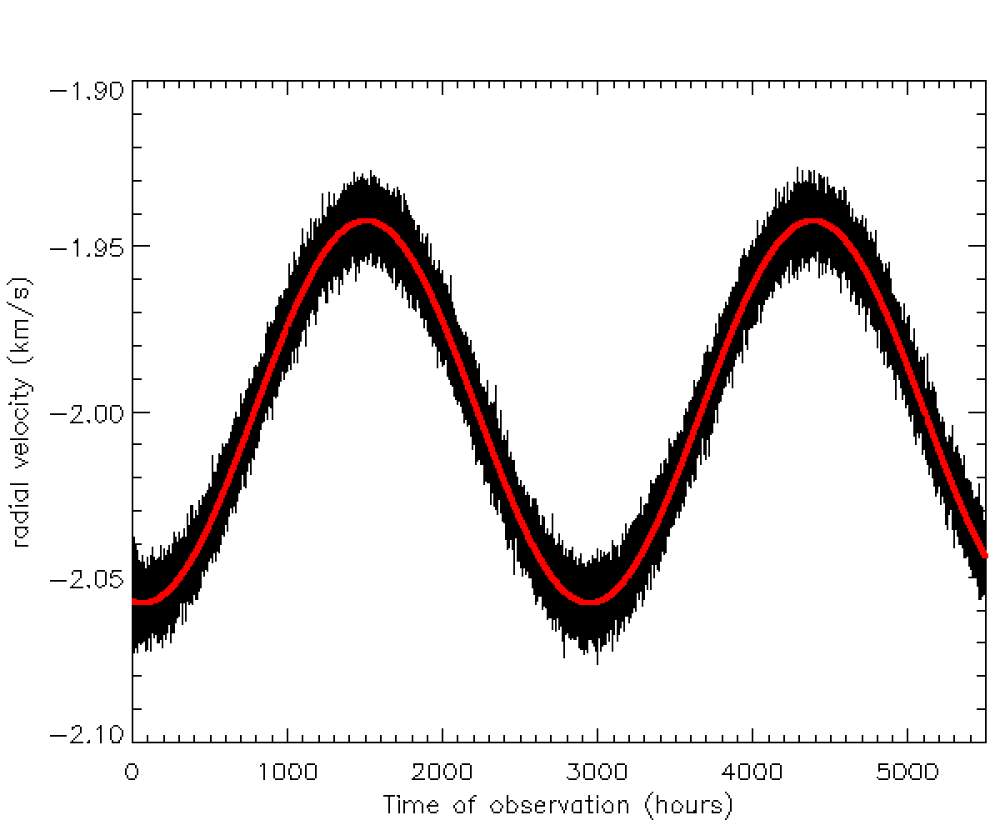

Du må bruke presentasjonsmodus for å lese denne, men du skal ikke bruke frem/tilbake-knappene, KUN knappene som dukker opp på sliden for å ta deg videre! Merk at noen knapper vil åpne nettskjema, videoer eller andre ressurser i internettbrowseren din.
Trykk denne knappen for å begynne
Forrige side

Velkommen til andre forelesning av del 1C! Vi skal begynne med å bruke det du lærte i første forelesning på noen eksempler. Deretter skal vi se hvordan vi kan analysere data med støy, og du skal lære å estimere planetmasser fra mer realistiske stjernedata.
Er du klar?
Neste side
Forrige side
Vi utledet i forrige forelesning sammenhengen mellom stjernas banehastighet og massen til planeten som går i bane rundt stjerna $$m_p=\left(\frac{P}{2\pi G\sin{i}}\right)^{1/3}m_*^{2/3}v_*$$ der P er omløpsperioden, i er inklinasjonen (husker du hvordan den er definert? Hvis ikke, gå tilbake og sjekk nå!), stjernas masse m* som vi kan regne som kjent og til slutt v* som er stjernas banehastighet i banen om massesenteret. Dopplereffekten gjør at vi kan finne stjernas radialhastighet (sjekk at du husker definisjon av radialhastighet og tangensialhastighet fra observatøren) på forskjellige tidspunkter ved å se på bølgelegnden til en spektrallinje. Fra hastighetskurven til stjerna (radialhastiheten vr(t) som funksjon av tiden) kan vi finne banehastigheten v* til stjerna (sjekk at du husker hvordan du leser den av fra kurven).
Inklinasjonen i er vanskelig å finne, men ved i = 90∘ kan vi få en formørkelse av stjerna hver gang planeten går foran. Deg gjør at vi kan måle radiusen til planeten hvis vi har gode data ved at 2Rp = vp(t1−t0). Husker du hvilke tidspunkter t0 ot t1 du må lese av og hvorfor disse tidspunktene? Du bør kunne utlede denne sammenhengen! Neste side
Forrige side
Vi skal gjøre deler av oppgave 1C.3 her. Vi skal se på en realistisk hastighetskurve med støy. Vi skal snart lære mer om støy, men den gir et tilfeldig ekstra utslag på hastighetskurven i hvert tidssted. Støyen gir et tilfeldig hastighetsbidrag i hvert tidssteg som i middel skal gå like mye opp som ned slik at den underliggende kurven uten støy ligger midt inne i støyen.
Her ser vi radialhastighetskurven til en stjerne. Anslå egenhastigheten til stjerna hvis du ikke husker hva egenhastighet var, gå tilbake til forrige forelesning, dette er et svært viktig konsept!. Er den:
0m/s 2500m/s 2475m/s 2300m/s 2125m/s 2100m/s 400m/s 175m/s
Forrige side
Det ble galt. Er du sikker på at du forstår hva egenhastighet er for noe? Egenhastigheten er hastigheten til massesenteret. Stjerna har hastigheten til massesenteret pluss banehastighet omkring massesenteret. Gå tilbake til forrige forelesning og kontroller at du forstår godt hvorfor hastighetskurven ser ut slik som den ser ut. Hvis du ikke forstår dette må du ikke gå videre da vil du ikke få noe ut av denne forelesningen. Tenk og gjør et nytt forsøk. Hvis du etter det enda ikke forstår, kikk på denne videoen.
Forrige side
Bra! Du ser ut til å ha forstått hastighetskurven og at egenhastigheten er massesenterets hastighet. Hvis du likevel skulle være litt i tvil, så kikk gjerne på denne videoen som forklarer det i litt detalj. Neste side
Forrige side
Vi fortsetter med deler av oppgave 1C.3 her:
Forrige side
Det ble ikke helt riktig. Kan det være at du har glemt at støyen gir like mye utslag opp som ned og at den virkelige hastighetskurven som vi er ute etter ligger midt inne i den støyete kurven? Eller kan det være at du har glemt at banehastigheten er hastigheten i forhold til massesenteret? Tenk litt til, og prøv igjen!
Forrige side
Det er helt riktig! Siden banehastigheten er hastigheten i forhold til massesenteret, så må vi se på det maksimale utslaget fra massesenterhastigheten. 
Vi ser på det maksimale utslaget siden vr-komponenten har den fulle hastigheten i punkt B på figuren (se forrige forelesning). Massesenterhastigheten er 2300m/s og det maksimale utslaget på toppen av kurven er ca. 2475m/s. MERK at det ikke er 2500 m/s siden dette er det maksimale utslaget med støy. Hvis den virkelige glatte kurven ligger midt inne i støyen slik at det er like mye støyutslag opp som ned, så må den vel ligge på ca. 2475m/s? Dermed har vi at 2475m/s-2300m/s = 175m/s (vi trekker altså fra massesenterhastigheten for å få hastighet i forhold til massesenteret).
Neste side
Forrige side
Hvis vi nå antar at inklinasjonen er ukjent, gjør et estimat av den minste mulige massen som denne planeten må ha. Anta at man ved spektroskopi har anslått stjernas masse til å være 0.3m⊙ (merk at vi bruker m⊙ til å markere solmasser), altså en liten rød dvergstjerne.
Forrige side
Det ble nok ikke helt riktig. Usikkerheter i avlesninger gir litt slingringsmonn, men dette var litt for langt unna! Har du brukt P = 300 timer, v* = 175m/s og m* = 0.3m⊙? Hva får du hvis du bruker disse tallene? Blir det veldig forskjellig fra ditt tall? Gjør et nytt forsøk og spør gruppelærer hvis du ikke får det til.
Forrige side
Flott, du fikk det til! Kanskje du ikke fikk helt dette tallet? Det kan komme an på unøyaktigheter i avlesningen. Med P = 300 timer, v* = 175m/s og m* = 0.3m⊙ skulle du få et tall i nærheten av 0.9 jupitermasser. Neste side
Forrige side
Som du ser blir det ganske høy usikkerhet da det er vanskelig å lese av P og v* nøyaktig med støy på kurven. Dette skal vi se nærmere på senere i denne forelesningen. Men først skal vi jobbe litt mer med oppgave 1C.3. Vi fortsetter med den samme stjerna, men observasjoner av lyskurven viser at planeten formørker stjerna. Her ser vi utdrag av lyskurven fra en formørkelse:
Forrige side
Det ble nok ikke helt riktig. Usikkerheter i avlesninger gir litt slingringsmonn, men dette var litt for langt unna! Har du brukt at tiden fra planeten begynner å formørke stjernen til planeten formørker stjernen fullstendig er ca. 0.8 timer? Og at planethastigheten vp ≈ 60km/s? Hva får du hvis du bruker disse tallene? Blir det veldig forskjellig fra ditt tall? Gjør et nytt forsøk og spør gruppelærer hvis du ikke får det til.
Forrige side
Flott, du fikk det til! Kanskje du ikke fikk helt dette tallet? Det kan komme an på unøyaktigheter i avlesningen. Med vp ≈ 60km/s og t1 − t0 ≈ 0.8 timer skulle du få et tall i nærheten av 1.3 jupiterradier. Vi ser altså at vi har en planet som er litt mindre massiv en jupiter men med noe større radius. Da får vi ca. 0.6 ganger tettheten til vann, litt mindre enn Saturn som har 0.7 ganger vannets tetthet. Dette er altså helt klart en gassplanet. $$\rho = \frac{0.9\times1.9\times10^{27}\mathrm{kg}}{\frac{4}{3}\pi(1.3\times70\times10^6\mathrm{m})^3}$$ Neste side
Forrige side
Forstår du alle stegene? Hvis ikke, ta kontakt med foreleser eller gruppelærer!
Husk at når vi karaktersetter prosjektet eller eksamen så er det forklaring av metoden som vi ser etter, ikke svaret. Når det gjelder estimering av planetmasser/radier, så er det fort gjort å venne seg til hvor man skal lese av på kurven og så sette disse tallene inn i en formel. Men da er det fort gjort å glemme hvorfor man skal lese av på den måten og hvorfor formelen ser ut som den gjør. Det er disse tingene du blir testes i, ikke om du kan lese av fra en kurve og sette inn i en formel, det forutsetter vi at du kan.
Da har tiden kommet til å teste forståelsen din litt mer i dette skjemaet. Ikke gå videre før du har sendt det inn da du trenger denne treningen i stoffet før du kan gå videre på statistikk og dataanalyse. Hvis du sliter med noen av spørsmålene i skjemaet, så er det svært viktig at du spør foreleser eller gruppelærer da skjemaet tester sentral forståelse som du kommer til å trenge videre i kurset. Jeg har sendt inn skjemaet og er klar for dataanalyse-delen
Forrige side

I figuren ser vi en radialhastighetskurve tatt fra en spektrallinje i spektret fra en stjerne. Den røde linjen viser hvordan kurven hadde sett ut hvis det ikke var støy i måleinstrumentene. Den sorte kurven viser hva som faktisk måles og som gjør det vanskelig å trekke nøyaktige hastigheter ut av kurven. Neste side
Forrige side
Figuren viser stjerna i banen om massesenter med en vinkel θ som sier hvor i banen stjerna er. På figuren ser vi at θ også er vinkelen mellom v⃗ og synslinja. Ser du hvorfor det er samme vinkel θ begge steder? (hint: en forlengelse av linja fra sentrum av sirkelen og radielt utover ved θ).. For å kunne bruke kurven med støy til å finne mest mulig nøyaktige tall, trenger vi å lage en modell for den glatte ’virkelige’ kurven som vi hadde observert hvis vi ikke hadde hatt støy. Bruk figuren til å se om du kan utlede en analytisk modell for observert radialhastighet som funksjon av vinkelen θ(t) som er vist på figuren, samt den faktiske banehastigheten v* til banen (som er den vi er interessert i). $v_r(t)=v_*\sin{\frac{2\pi}{\theta(t)}}$ $v_r(t)=v_*\cos{\frac{2\pi}{\theta(t)}}$ vr(t) = v*sin θ(t) vr(t) = v*cos θ(t) vr(t) = v*cos θ(t)sin θ vr(t) = v*tan θ(t)
Forrige side
Det ble feil, kansje du ikke kikket nøye nok på figuren? Innser du hvorfor θ som er vinkelen mellom v⃗ og vr må være samme vinkel som den θ som angir hvor på sirkelen stjernen er? Hvis du gjør det så ser du at θ er vinkelen mellom v⃗ og vr som betyr, som du jo vet, at vr er x-komponenten av v⃗? Dermed er vr projeksjonen av v⃗ med vinkelen θ. Hjalp det? Gå tilbake og prøv igjen.
Forrige side
Helt riktig. Innser du hvorfor θ som er vinkelen mellom v⃗ og vr må være samme vinkel som den θ som angir hvor på sirkelen stjernen er? Hvis du gjør det, så har du innsett at vr er x-komponenten til v⃗ med vinkel θ imellom og dermed er altså vr(t) = v*cos θ(t) Neste side
Forrige side
Njaaaa, det ble nok ikke helt riktig! Er du enig i at banehastigheten til stjerna er konstant siden det er sirkelbane? (hvis ikke, sjekk del 1B) Det betyr at vinkelhastigheten er konstant. Men hva er vinkelhastigheten? Stjerna skal gå rundt hele sirkelen i løpet av en periode P. Når du har vinkelhastigheten, altså endring i θ per tidsenehet, så kan du finne vi θ når du har den totale tiden. Hjalp det? Gå tilbake og prøv igjen. Sliter du med dette, spør foreleser eller gruppelærer.
Forrige side
Helt riktig. Stjerna skal gå en hel rundt på 2π i løpet av perioden P, dermed er vinkelhastigheten $\frac{2\pi}{P}$. Ganger vi dette med tiden t som har gått så får vi vinkelen. Setter vi dette inn i vårt forrige resultat så har vi $$v_r(t)=v_*\cos{\frac{2\pi}{P}t}$$ På figuren hadde vi definert når vinkelen θ er 0. Vi går nå bort ifra denne definisjonen og sier at ved tiden t = t0 så er θ = 0. Vi definerer altså isteden et tidspunkt t0 der vinkelen er 0: $$v_r(t)=v_*\cos{\frac{2\pi}{P}(t-t_0)}$$ Hvis vi definerer t0 på denne måten, hvor på kurven er vi ved t = t0??
Tenk før du blar om! Neste side
Forrige side
Hvis vi ser på uttrykket: $$v_r(t)=v_*\cos{\frac{2\pi}{P}(t-t_0)}$$ så ser vi at ved t = t0 så er vr = v*, altså radialhastigheten er lik den fulle banehastigheten.
Da er radialhastigheten maksimal, altså er vi på toppen av kurven. Dette skulle du huske fra diskusjonen i forrige forelesning: dette er punktet hvor stjernen er på vei bort fra oss langs vår synslinje og hele banehastigheten er i radialhastigheten uten noen tangensialkomponent (hvis vi antar at inklinasjonen er 90∘!). Dette var punktet B på figuren i forrige forelesning. Repeter litt hvis du er usikker. Neste side
Forrige side
$$v_r(t)=v_*\cos{\frac{2\pi}{P}(t-t_0)}$$
Vi har nå et uttrykk for hvordan kurven skal se ut hvis vi ikke har støy, uttrykt ved banehastigheten v*, omløpsperioden P og tidspunktet t0 når kurven har første topp-punkt. Problemet er bare at vi ikke kjenner noen av disse 3 parameterene.
Det er akkurat disse størrelsene vi ønsker å finne!!. Hvis vi finner v* og P så kan vi estimere massen til planeten slik som i forrige forelesning. Men vi har altså en støyete kurve som gjør det vanskelig å lese av v* og P, samtidig har vi en analytisk modell som sier hvordan den underliggende støyfrie kurven skal se ut, dersom vi kjenner v* og P. Det store spørsmålet nå er, hvordan kan vi bruke den analytiske modellen vår, sammen med den observerte støyete kurven til å finne gode estimater av tallene v* og P? Diskuter med medstudenter, og ikke gå videre før du har tenkt godt gjennom problemstillingen!!! Neste side
Forrige side
Er du helt sikker på at du har tenkt godt gjennom dette? Har du fått noen ideer? Tenk litt til før du går videre! Neste side
Forrige side
Har du hørt om minste kvadraters metode?. Metoden som går ut på å minimalisere forskjellen mellom modellen og dataene?
Vi skal finne den røde linja som passer best til de observerte datene med støy. Vi vet at de røde linjene vi kan tegne, alle må følge: $$v_r(t)=v_*\cos{\frac{2\pi}{P}(t-t_0)}$$ Vi kan endre på den røde linja ved å endre på verdiene for v*, P og t0. Minste kvadraters metode sier oss altså å justere modellen (den røde linja), dvs. endre de ukjenten parameterene v*, P og t0, helt til vi finner den modell-linja som gir minst forskjell mellom modellen og den observerte kurven. Neste side
Forrige side
Minste kvadraters metode går altså ut på å minimalisere forskjellen mellom modellen og dataene:
Der vi vet at modellen vår er gitt ved: $$v_r(t)=v_*\cos{\frac{2\pi}{P}(t-t_0)}$$ Men hvordan defineres den minste forsjellen?. Det er rett og slett forskjell slik vi vanligvis omtaler en forskjell: datakurven minus modellkurven. Men vi opphøyer denne forsjellen i annen potens, derav navnet minste kvadrat. Dette er for å få absoluttverdien, det er ikke viktig om forskjellen er negativ eller positiv. Det finnes også en statisik begrunnelse for å ta kvadratet, denne kommer snart. Neste side
Forrige side
Vi skal altså lage oss mange forskjellige røde kurver med forskjellige tallverdier for P, v* og t0
$$v_r^\mathrm{mod}(t)=v_*\cos{\frac{2\pi}{P}(t-t_0)}$$ helt til vi finner en som gir oss den minste mulige kvadratforskjellen. Rent matematisk skal vi altså summere kvadratforskjellen over alle målepunktene våre, dvs over alle observerte tidspunkter ti. Tidspunktet for observasjon nr. i er derfor ti og vi har totalt N slike observasjoner. Da få vi at kvadratforskjellen er gitt ved: $$\begin{aligned}
&\Delta(v_*, P, t_0) = \\
&\sum_{i=1}^N\left^2\end{aligned}$$ der vi ser at Δ altså er en funksjon av de ukjente parameterene P, v* og t0. Her er vrobs den observerte sorte kurven og vrmod er den røde modellkurven. Vi skal altså finne de parameterene P, v* og t0 som minimaliserer Δ. Dette vil være de tallene P, v* og t0 som passer best til dataene og de vi skal bruke videre til å finne massen. Neste side
Forrige side
Men er dette virkelig det beste vi kan gjøre? Det blir jo noen unøyaktigheter i verdiene for P, v* og t0 som vi får med denne metoden. Hvor presise resultatene våre er avhenger av hvor kraftig støy det er. Hvis vi nå skulle kjenne noen egenskaper til støyen, noe vi normalt gjør, kan vi da finne en mer sofistikert metode som gir oss bedre estimater? For å finne ut av dette, la oss dykke litt ned i statistikken her...
Neste side
Forrige side
Normalt kan vi anta Gaussisk støy. Dvs at vi kan skrive hastigheten vr i observasjon nr. i som vrobs(ti) = vrreal(ti) + δvi der vrreal er det faktiske hastighetskurven som du hadde sett hvis det ikke hadde vært støy i instrumentet og δvi er støy i observasjon i. Hvis støyen er Gaussisk så betyr det at δvi er et tilfeldig tall trukket fra en Gaussisk sannsynlighetsfordeling. Normalt er denne med middelverdi 0 slik at hvis man hadde en uendelig mengde observasjoner av det samme datapunktet så vill du i middel fått den faktiske verdien. I tillegg kan man ofte måle standardavviket til fordelingen, vi kaller denne σn der n står for noise. Gitt at denne er kjent, skriv ned sannsynlighetsfordelingen P(δvi), dvs. sannsynligheten for at vi ved en gitt observasjon får en verdi δvi for støyen.
Er du klar? Har du et forslag til sannsynlighetsfordeling? Er du usikker, ta gjerne en kikk tilbake til del 1A for å reptere litt om Gaussiske sannsynlighetsfordeling. Du kommer til å få bruk for dette igjen, så gjør det med en gang, så du er klar til å gå videre!. Neste side (bare når du har et forslag til sannsynlighetsfordeling)
Forrige side
I del 1A lært vi at en Gaussisk sannsynlighetsfordeling for en stokastisk variabel x med gjennomsnittsverdi μ og standardavvik σ er gitt ved $$P(x) = \frac{1}{\sqrt{2\pi}}e^{-\frac{1}{2}\frac{(x-\mu)^2}{\sigma^2}}$$ Hvis middelverdien for støyen er 0, noe den ofte er, og standardavviket er σn, så bli jo det da rett og slett: $$P(\delta v_i) = \frac{1}{\sqrt{2\pi}}e^{-\frac{1}{2}\frac{\delta v_i^2}{\sigma_n^2}}$$ som igjen er en sannsynlighetstetthet, dvs at vi må gange med et intervall av mulige verdier for støyen δvi for å få en faktisk sannsynlighet. Neste side
Forrige side

På figuren ser du observasjoner av en hastighetskurve med to forskjellige teleskoper, et med betydelig høyere støynivå enn det andre. Dermed er standardavviket σn for støyen også forskjellig. Omtrent hva er σn for hver av disse instrumentene? La oss kalle observasjonene til venstre med minst støy for A og de til høyre med mest støy for B.
σnA ≈ 1930m/s og σnB ≈ 1900m/s σnA ≈ 140m/s og σnB ≈ 200m/s σnA ≈ 30m/s og σnB ≈ 80m/s σnA ≈ 15m/s og σnB ≈ 40m/s σnA ≈ 7 m/s og σnB ≈ 20m/s Neste side
Forrige side
Det var ikke helt riktig. Under ser du en zoom av området rundt toppen av kurven til venstre (vi kunne ha tatt hvor som helst på kurven). Den røde linjen er observasjonen du hadde hatt uten støy, dvs. når støyen er 0. Utsalgene over og under er når du får positive eller negative verdier for støyen δvi. Husker du at 95% av verdiene for en Gaussisk fordeling skal ligge innenfor 2σ? Hvis ikke, så er det svært viktig at du går tilbake til del 1A da du har glemt viktig kunnskap som du trenger videre. Ta nå et papir, tegn en Gaussisk sannsynlighetsfordeling med forskjellige verdier for δvi på x-aksen, med da 0 i midten siden gjennomsnittsverdien for denne Gaussiske fordelingen er 0. Tegn inn 1σ og 2σ (gjerne med hjelp av kurver fra del 1A) og sammenlikn med figuren under. Gå nå tilbake og gjør et nytt forsøk.
Forrige side
Flott! Du fikk det til. Det betyr at du forstår hva det betyr at støyen er Gaussisk fordelt og hva en Gaussisk fordeling er. Hvis du nå likevel er litt usikker, ta en titt på denne videoen. Neste side
Forrige side
Men hva skal vi gjøre i en slik situasjon når støyen varierer med tiden? Hvis vi bruker vanlig minste kvadraters metode her, så behandler vi dataene av dårlig kvalitet på samme måte som dataene av god kvalitet, kan det være riktig? Vi kan vel ikke få et optimalt godt estimat av modellen vår på den måten? Kan du tenkte deg hvordan vi kan gjøre en liten modifikasjon av minste kvadraters metode $$\Delta(v_*, P, t_0) = \sum_{i=1}^N\left^2$$ for å ta hensyn til at standardavviket til støyen ikke alltid er den samme? Tenk deg godt om før du går videre! Neste side
Forrige side
La oss se om vi kan utlede hva som er den beste måten å gjøre dette på!
La oss fortsette med statitsikken. Vi fant at sannsynligheten for at støyen i observasjon i er gitt ved $$P(\delta v_i) = \frac{1}{\sqrt{2\pi}}e^{-\frac{1}{2}\frac{\delta v_i^2}{\sigma_n^2}}$$ Hvis vi antar at standardavviket til støyen endrer seg for hver observasjon i og at standardavviket for støyen for observasjon nr. i er gitt ved σi, så blir vel den modifiserte sannsynligheten $$P(\delta v_i) = \frac{1}{\sqrt{2\pi}}e^{-\frac{1}{2}\frac{\delta v_i^2}{\sigma_i^2}}$$ Enig? Ja Nei
Forrige side
Hvorfor ikke???? Er du usikker, spør foreleser! Neste side
Forrige side
Flott, da kan vi gå videre. Vi har altså $$P(\delta v_i) = \frac{1}{\sqrt{2\pi}}e^{-\frac{1}{2}\frac{\delta v_i^2}{\sigma_i^2}}$$ for sannsynligheten i et gitt tidspunkt i. Men hva er sannsynligheten for at vi får et helt sett med verdier {δv0, δv1, δv2, ..., δvN}? Dvs. hva er f.eks. sannsynligheten for at vi får akkurat alle de støyverdiene som vi ser på figuren for alle tidspunkter i? (Hint: lov om multiplikasjon av sannsynlighet)
Ikke gå til neste side før du har et forslag til sannsynlighetsfordeling for P(δv0,δv1,δv2,...,δvN) Neste side
Forrige side
Nettopp ja, loven om multiplikasjon av sannsynligheter, vi ganger sammen sannsynligheten for støyen hvert tidspunkt i for å få den totale sannsynligheten for alle støyverdiene i alle N observasjonstidspunkter (hvis vi går tilbake til eksemplet vårt i del 1A så kan du jo tenke deg at den første støyverdien er høyden til en tilfeldig person, den andre er IQ-en til en tilfeldig person, den tredje er vekta til en tilfeldig person, etc. Ved å gange sammen sannsynlighetene kan du finne sannsynligheten for at en person har et gitt sett med verdier for disse 3 egenskapene, akkurat som vi nå kan finne sannsynligheten for at støyen i hvert observasjonspunkt har et gitt sett med verdier). $$P(\delta v_0, \delta v_1, \delta v_2, ..., \delta v_N)) = \prod_{i=1}^N\frac{1}{\sqrt{2\pi}}e^{-\frac{1}{2}\frac{\delta v_i^2}{\sigma_i^2}}$$ Neste side
Forrige side
Ser du at vi kan skrive om på følgende måte...dette var uttrykket vår: $$P(\delta v_0, \delta v_1, \delta v_2, ..., \delta v_N)) = \prod_{i=1}^N\frac{1}{\sqrt{2\pi}}e^{-\frac{1}{2}\frac{\delta v_i^2}{\sigma_i^2}}$$ og ved å skrive ut faktorene etterhverandre og bruke det vi kan om eksponenter, så kan vi skrive det som $$P(\delta v_0, \delta v_1, \delta v_2, ..., \delta v_N) = \left(\frac{1}{\sqrt{2\pi}}\right)^Ne^{-\frac{1}{2}\sum_{i=1}^N\frac{\delta v_i^2}{\sigma_i^2}}$$ Kan du se at det stemmer? Hvis ikke, skriv dette ut på papir og bruk loven om at man kan summe eksponentene i et produkt. Ser du det? Hvis ikke spør foreleser! Neste side
Forrige side
Hvis du går noen sider tilbake vil du se at vi skrev: vrobs(ti) = vrreal(ti) + δvi Dette skriver vi om til δvi = vrobs(ti) − vrreal(ti) og setter inn for δvi i uttrykket vårt. Da får vi $$P(\delta v_0, \delta v_1, \delta v_2, ..., \delta v_N) = \left(\frac{1}{\sqrt{2\pi}}\right)^Ne^{-\frac{1}{2}\sum_{i=1}^N\frac{(v_r^\mathrm{obs}(t_i)-v_r^\mathrm{real}(t_i))^2}{\sigma_i^2}}$$ Målet vår er å finne en modell for vrreal(ti), dvs. en modell vrmod(ti) som vi setter som vårt estimat av den reelle hastighetskurven. Hvis du kikker på uttrykket, begynner du å ane hvor minste kvadraters metode kommer fra? Og begynner du ane hvordan den kan modifiseres? Neste side
Forrige side
Hvis vi setter inn modellen vår som den virkelige kurven så blir det: $$P(\delta v_0, \delta v_1, \delta v_2, ..., \delta v_N) = \left(\frac{1}{\sqrt{2\pi}}\right)^Ne^{-\frac{1}{2}\sum_{i=1}^N\frac{(v_r^\mathrm{obs}(t_i)-v_r^\mathrm{mod}(t_i))^2}{\sigma_i^2}}$$ hvor vi vet at vrmod(ti) inneholder de ukjente parameterene v*, P og t0 som vi ønsker å finne. Vi ønsker altså å finne den modellen, dvs. de parameterene v*, P og t0, som gir den største mulige sannsynligheten for å observere den kurven, dvs. det sett med verdier δv0, δv1, δv2, ..., δvN som vi faktisk observerer. Vi ønsker altså å finne de verdiene for v*, P og t0 som maksimaliserer sannsynligheten P(δv0,δv1,δv2,...,δvN). Hvordan kan vi skrive dette matematisk litt enklere?? Neste side
Forrige side
Vi har $$P(\delta v_0, \delta v_1, \delta v_2, ..., \delta v_N) = \left(\frac{1}{\sqrt{2\pi}}\right)^Ne^{-\frac{1}{2}\sum_{i=1}^N\frac{(v_r^\mathrm{obs}(t_i)-v_r^\mathrm{mod}(t_i))^2}{\sigma_i^2}}$$ som skal maksimaliseres. Er du enig i at dette er identisk med å maksimalisere eksponenten her? Og siden det står et minustegn i eksponenten, er du enig i at vi da skal minimalisere det som kommer etter minustegnet? Tenk to ganger for å sjekke om du er enig! Neste side
Forrige side
Er vi dermed enige om at for å maksimalisere sannsynligheten, så må vi minimalisere $$\sum_{i=1}^N\frac{(v_r^\mathrm{obs}(t_i)-v_r^\mathrm{mod}(t_i))^2}{\sigma_i^2}$$ Denne størrelsen pleier vi å kalle χ2, dvs. $$\chi^2 = \sum_{i=1}^N\frac{(v_r^\mathrm{obs}(t_i)-v_r^\mathrm{mod}(t_i))^2}{\sigma_i^2}$$ Hvis nå standardavviket til støyen σi er en konstant størrelse, hva blir dette til da???
Si det... noe renspikka tull! Newtons 2.lov! Maxwell-Boltzmann! Teorien om alt Minste kvadraters metode
Hmmm, du har kanskje ikke fulgt så godt med?? Eller kanskje du falt av litt tidligere? Eller kanskje du var nysjerrig på hva som kom her? Du trenger nok å reptere litt av det grunnleggende som vi har gått gjennom før du kommer hit på nytt Trykk her!
Forrige side
Flott! Helt riktig, tar vi ut σi som en konstant så får vi nøyaktig likningen for minste kvadraters metode som vi hadde tidligere. Vi har altså utledet minste kvadraters metode. Ser du nå også hvilken modifikasjon vi får når standardavviket til støyen endrer seg med observasjonser? $$\chi^2 = \sum_{i=1}^N\frac{(v_r^\mathrm{obs}(t_i)-v_r^\mathrm{mod}(t_i))^2}{\sigma_i^2}$$ vi deler altså hvert kvadrat med σi2. Hvis støyen for denne målingen er stor, altså σi er stor, så deler vi på et stort tall. Omvendt, er støyen liten så deler vi på et lite tall. Ser du at vi her vekter hvert kvadrat med et stort tall når kvaliteten på målingen er god, og et lite tall når kvaliteten er dårlig?. Dette er χ2-metoden for estimering av parametere. Vi antok Gaussisk støy i denne utledningen, hvis støyen ikke er Gaussisk, så er disse metodene ikke optimale for å estimere parametere!. Hvis avviket fra Gaussianitet ikke er veldig stort, så blir disse metodene likevel ofte brukt. Neste side